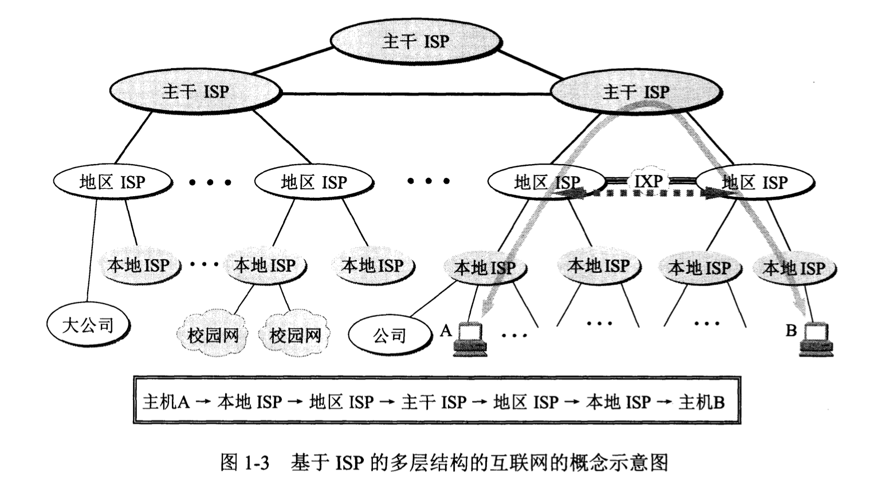
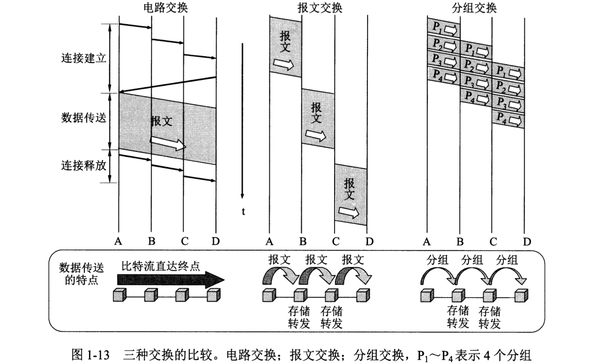
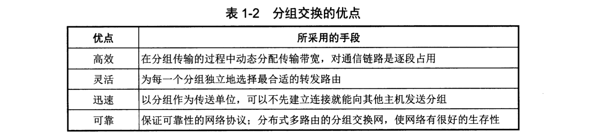
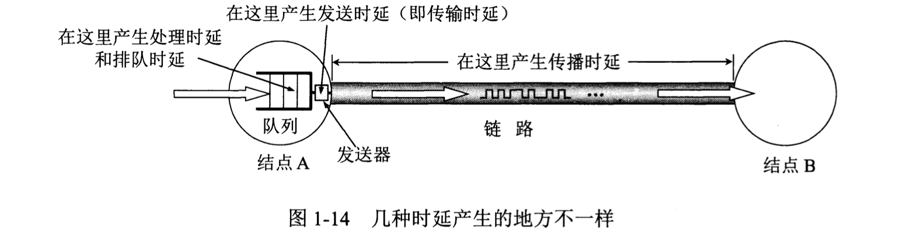
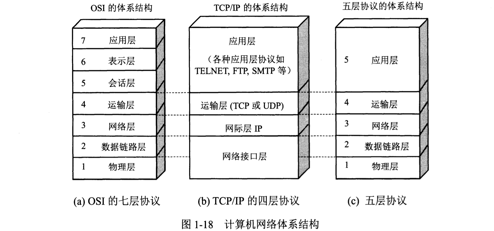
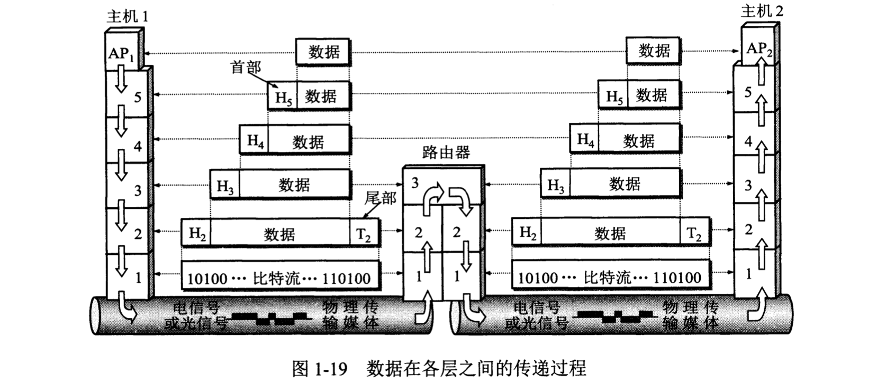
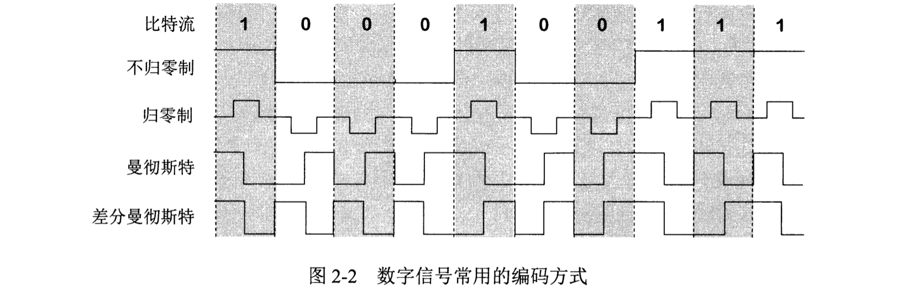
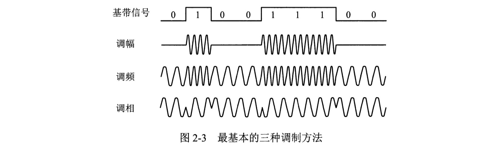

《计算机网络（第七版）》读书笔记（第 1-2 章）
旧书清理系列。这本书本科选修课学过，工作后也粗略看过。正好赶上 17 年的新版本发行，最后一遍就在这里整理一下吧。
第 1 章 - 概述
- （Page：1）三类网络：
- 电信网络：向用户提供电话、电报及传真等服务；
- 有线电视网络：向用户传送电视节目；
- 计算机网络：使用户能够在计算机之间传递数据。
（目前的“三网”业务之间有一定的交集）
- （Page：5）internet 与 Internet：
- internet（互连网）：通用名词，泛指由多个计算机网络互连而成的计算机网络；
- Internet（互联网）：专有名词，指当前全球最大的、开放的特定互连网，它采用 TCP/IP 协议族作为通信规则，前身为美国的 ARPANET。
- （Page：6）多层次 ISP 互联：

- IP 地址发放：IP 地址管理机构 -> ISP（拥有自己的通信线路）-> 个人。
- ISP 类型：
- 主干 ISP：由几个专门的公司创建和维护，拥有高速主干网；
- 地区 ISP：较小的 ISP，通过一个或多个主干 ISP 连接起来；
- 本地 ISP：可以连接到本地 ISP，也可以直接连接到主干 ISP。主要给用户提供直接服务。
- IXP（互联网交换点，Internet eXchange Point）：可以更快地“转发分组”，更有效地利用网络资源。它允许两个网络直接相连并交换分组，而不需要第三个网络，通常采用工作在数据链路层的网络交换机实现。
- （Page：12）网络边缘端系统的通信方式：
- C/S：“客户-服务器”方式；
- P2P：对等连接，两台主机在通信时不区分哪一个是服务请求方哪一个是提供方（本质仍是 C/S 模式，只是对等连接中每一台主机即是客户又同时是服务器）。
- （Page：12）互联网核心：

- 电路交换：建立连接 -> 通话 -> 释放连接；在通话的全部时间内，通话的双方始终占用端到端的通信资源；
- 报文交换：整个报文先传送到相邻节点，全部存储下来后查找转发表，转发到下一个节点；
- 分组交换：把一个报文划分为几个数据段后，在其前面加上一些由必要控制信息组成的“首部（存有目的地址、源地址以及控制信息）”后，就形成了“分组”。分组由“路由器”在整个网络中从源到目的进行转发。
- 分组交换的优点：

- 分组交换的问题：
- 分组在各路由器存储转发时需要排队，会引起一定的“时延”；
- 无法保证通信时端到端所需的带宽；
- 分组必须携带的控制信息可能成为一定的开销。
- （Page：20）几种不同类别的计算机网络：
- 广域网 WAN：作用范围通常为几十到几千公里；
- 城域网 MAN：作用范围一般为一个城市；
- 局域网 LAN：作用范围通常为一公里左右；
- 个人区域网 PAN：作用范围通常为十米左右；
- （Page：21）计算机网络性能指标：
- 速率：bit/s（比特每秒，b/s、bps）；
- “15 GB 的数据块以 10 G 的速率传送”：表明有 15 x 2^30 x 8 比特的数据块以 10 x 10^9 bit/s 的速率传送。
- 带宽：表示单位时间内传送数据的能力。频域：信号具有的频带宽度，即该信号所包含的各种不同频率成分所占据的频率范围，单位为“赫”；时域：单位时间内网络中某信道所能通过的“最高数据率”，单位为 “bit/s”；
- 吞吐量：单位时间内通过某个网络的实际数据率；
- 时延：数据从网络的一端传送到另一端所需的时间（总时延为下述四类时延之和）；
- 发送时延：主机或路由器发送数据帧所需时间；
- 传播时延：电磁波在信道中传播一定距离所需时间（1000 公里长的光纤线路产生的传播时延大约为 5ms）；
- 处理时延：主机或路由器在收到分组后处理（分析分组首部、提取数据、进行差错校验、查找路由等）所需时间；
- 排队时延：分组在各个路由器输入队列中排队等待所需时间。
- 各类“时延”：

（对于高速网络链路，提高的仅是数据的发送速率而非比特在链路上的传播速率）
- 时延带宽积：传播时延 x 带宽（表示某一段线路可容纳的比特数，即：以“比特”为单位的链路长度）；
- 往返时间 RTT（Round-Trip Time）：两个节点双向交互一次所需时间；
- 利用率：信道或网络（全网信道利用率的加权平均）利用率过高会产生非常大的时延，一般拥有较大主干网的 ISP 在其信道利用率超过 50% 时就会准备扩容，以增大线路带宽。
- （Page：27）计算机网络体系结构：计算机网络的各层及其协议的集合。
- 网络协议：为进行网络中的数据交换而建立的规则、标准或约定。其主要由三个要素组成：
- 语法：数据与控制信息的结构或格式；
- 语义：需要发出何种控制信息，完成何种动作以及做出何种相应；
- 同步：事件实现顺序的详细说明。
- 分层的好处：
- 各层保持独立：下层只向上层提供稳定的接口即可；
- 高灵活性：任一层可以独立变化和设计，只要保证层间接口关系不变即可；
- 结构上可分割：各层可采用最合适的技术实现；
- 易于实现和维护：整个系统被分解为几个相对独立的“子系统”；
- 可促进标准化工作：每一层所提供的服务都可以被精确描述。
- 计算机网络分层：

- “五层”网络体系结构（为介绍原理而设计）：
- 应用层：通过应用进程间的交互来完成特定网络应用，该层协议定义的是“应用进程间通信和交互的规则”。应用层交互的数据单元称为“报文”；
- 运输层：负责向两台主机中进程之间的通信提供通用的数据传输服务；
- 传输控制协议（TCP）：提供面向连接的、可靠的数据传输服务，传输单位为“报文段”；
- 用户数据报协议（UDP）：提供无连接的、尽最大努力的数据传输服务，传输单位为“用户数据报”。
- 网络层：为分组交换网上的不同主机提供通信服务。其任务主要为：(1) 将上层的报文封装为分组（IP 数据报）；(2) 选择合适的路由；
- 网际协议（IP）：无连接。
- 数据链路层：将网络层的 IP 数据报组装成“帧”，可用于进行“差错校验和纠正”。每一个“帧”都包含必要的控制信息（同步信息、地址信息、差错控制等）；
- 物理层：考虑用多大电压表示 “1” 或 “0”、接收方如何识别发送方发送的比特、连接电缆的插头有多少根和引脚如何连接等（物理媒介不在这一层）。
- 数据在各层的传递过程：

第 2 章 - 物理层
- （Page：41）物理层：考虑如何才能在连接各种计算机的传输媒体上传输数据比特流。屏蔽传输媒体和通信手段差异，使数据链路层感受不到差异。该层主要任务为：
- 机械特性：指明接口所用接线器的形状和尺寸、引脚数目和排列、固定和锁定装置等；
- 电气特性：指明在接口电缆的各条线上出现的电压范围；
- 功能特性：指明某条线上出现的某一电平电压的意义；
- 过程特性：指明对于不同功能的各种可能事件的出现顺序。
- （Page：43）不同类型的信号：
- 模拟信号（连续信号）：代表消息的参数取值是连续的；
- 数字信号（离散信号）：代表消息的参数取值是离散的。
- （Page：43）几种基本通信方式：
- 单向通信（单工通信）：只能有一个方向的通信。无线电广播或有线电广播，以及电视广播；
- 双向交替通信（半双工通信）：通信双方都可发送信息，但不能同时发送；
- 双向同时通信（全双工通信）：通信双方都可发送信息，且能够同时发送。
- （Page：44）调试：基带信号往往含有较多“低频”成分，甚至“直流”成分，而许多信道无法传输这些成分，因此需要对基带信号进行“调制”。
- 基带调制（又称“编码”）：仅对基带信号的波形进行变换，变换后仍为基带信号（由一种数字信号变为另一种形式的数字信号）；
- 不归零制：正电平代表 1，负电平代表 0；
- 归零制：正脉冲代表 1，负脉冲代表 0；
- 曼彻斯特编码：位周期中心向上跳变代表 0，位周期中心向下跳变代表 1（也可反过来定义）；
- 差分曼彻斯特编码：在每一位的中心处始终都有跳变。边界处有跳变为 0，没有跳变为 1。

- 带通调制：需要使用“载波”进行调制，把基带信号的频率范围搬移到较高的频段，并转换为模拟信号，转换后为“带通信号”。
- 调幅（AM）：载波的振幅随基带数字信号而变化；
- 调频（FM）：载波的频率随基带数字信号而变化；
- 调相（PM）：载波的初始相位随基带数字信号而变化。

- （Page：45）信道的容量：
- 数字信号的优点：对于由于传输所造成的失真容错率较高；
- 码元传输速率越高，信号传输距离越远，噪声干扰越大，或传输媒体质量越差，接收端信号的波形失真就越严重；
- 在任何信道中，码元传输的速率是有上限的，传输速率超过此上限，就会出现严重的“码间串扰”问题，使接收端对码元的判别出现问题。所以，信道的频带越宽，那么就可以用更高速率传送码元而不出现码间串扰；
- 信噪比（S/N）：信号的平均功率和噪声的平均功率之比（dB）；
- 信道的极限信息传输速率可以通过“香农公式”（表明信道带宽或信噪比越大，信息的极限传输速率就越高）来计算。
- （Page：47）传输媒体：
- 双绞线；
- 同轴电缆；
- 光纤：利用光导纤维传递光脉冲进行通信（通信容量大，带宽在 10^8 MHz 左右）。
- （Page：53）信道复用技术：
- 频分复用（FDM）：所有用户在同样的时间占用不同的带宽（频率带宽）资源；
- 时分复用（TDM/STDM）：所有用户在不同的时间（周期性出现）占用同样的频带宽度（更利于数字信号的传输）；
- 码分复用（CDM）：用户使用经过特殊挑选的不同码型，因此不会造成干扰。有很强的抗干扰能力。
- 波分复用（WDM/DWDM）：“光”的频分复用。
（弃）